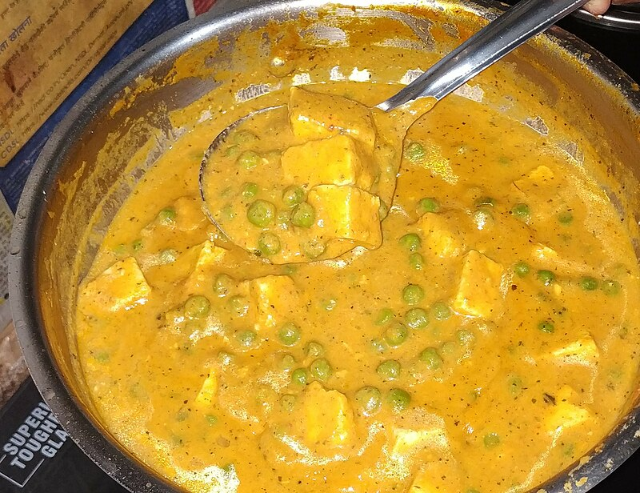

Mattar Paneer Recipe

Description
Mattar paneer is a modern restaurant-style and vegetarian North-Indian dish consisting of peas and paneer in a tomato-based sauce,
spiced with garam masala (source: Wikipedia).
Ingredients
- 200g Paneer (cubed)
- 1 cup Green Peas (fresh or frozen)
- 2 Tomatoes (pureed)
- 1 Onion (finely chopped)
- 1 tbsp Ginger-Garlic Paste
- 2 Green Chilies (slit or chopped)
- 2 spoons of Ghee
- ½ cup Water (adjust as needed)
- ½ tsp Cumin Seeds
- ½ tsp Turmeric Powder
- 1 tsp Coriander Powder
- ½ tsp Red Chili Powder
- 1 tsp Garam Masala
- Salt to taste
Steps
- Prep Work
- Finely chop 1 onion and puree 2 tomatoes.
- Soak 5-6 cashews in warm water for 10 minutes, then blend into a paste (optional).
- Lightly fry paneer cubes in 1 tsp oil or ghee until golden (optional). Soak them in warm water to keep them soft.
- Cooking the Masala Base
- Heat 2 tbsp oil in a pan.
- Add ½ tsp cumin seeds and let them splutter.
- Add 1 chopped onion and sauté until golden.
- Add 1 tbsp ginger-garlic paste and 2 chopped green chilies. Sauté until raw smell disappears.
- Add tomato puree and cook for 5-7 minutes until oil separates.
- Add spices: ½ tsp turmeric, 1 tsp coriander powder, ½ tsp red chili powder, and salt.
- Optional: Stir in blended cashew paste for a rich texture.
- Cooking Matar & Paneer
- Add 1 cup green peas and cook for 2 minutes.
- Pour in ½ cup water and let it simmer for 5 minutes.
- Gently add paneer cubes and mix well.
- Sprinkle 1 tsp garam masala and ½ tsp kasuri methi (crushed). Mix well.
- Optional: Stir in 2 tbsp fresh cream for extra richness.
- Garnishing & Serving
- Top with 2 tbsp chopped coriander leaves.
- Serve hot with roti, naan, or jeera rice.
Back to Main